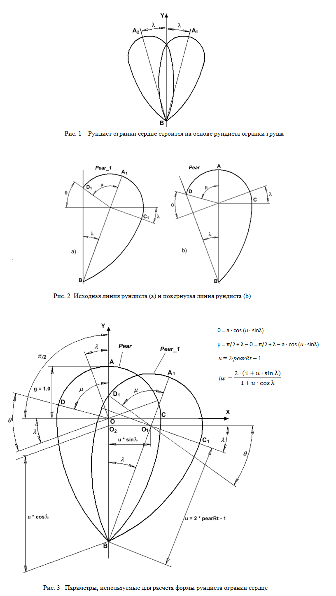

Одной из наиболее интересных (и сложных для построения) огранок считается огранка, выполненная в виде сердца (heart). В данном разделе мы создадим рундист такой огранки. вектор F который
Линию рундиста огранки сердце создадим на основе линии рундиста груши (рисунок 1). Возьмем линию рундиста груши и повернем ее сначала вправо, а затем влево на один и тот же заданный угол 𝜆. За центр вращения возьмем точку B расположенную на носике груши. Линия, получившаяся в результате этих двух поворотов, и будет использоваться для построения рундиста сердца. Из рассмотрения рисунка 1 видно, что получившаяся линия рундиста сердца симметрична относительно оси OY. Поэтому при расчете положения вершин рундиста достаточно найти координаты вершин только для его правой части. Координаты вершин левой части рундиста можно определить исходя из соображений симметрии. В отличие от всех остальных огранок, в огранке сердце ширину огранки будем отсчитывать вдоль оси OX, а длину огранки – вдоль оси OY.

Для нахождения координат вершин рундиста поступим, как уже было сказано,
следующим образом – повернем рундист влево на угол λ (рисунок 2b) и рассчитаем координаты вершин для правой его части.
Затем вернем рундист в исходное положение путем его поворота вправо на угол λ (рисунок 2a).
Для вывода основных соотношений между размерами отдельных элементов рундиста сердца будем считать,
что у исходной линии рундиста груши его часть, обозначенная как Ellipse_1 (смотри построение рундиста груши),
является окружностью. При такой предпосылке величина угла μ (он показан на рисунке 2),
используемая при делении рундиста на сегменты, находится гораздо проще, чем, если брать в качестве кривой Ellipse_1 истинный эллипс.
Поэтому будем пока считать, что величина полуоси g эллипса Ellipse_1 равна 1 и эллипс преобразовался в окружность.
Исходным параметром для получения формул является угол λ, на который осуществляется поворот линии рундиста груши.
Значение этого угла определяет, в свою очередь, величину угла μ (рисунки 2 и 3).
Угол μ необходим для расчета величины дуги DA. Дуга DAC, равная сумме дуг DA и AC,
будет в дальнейшем разделена на 34 сегмента. Используя рисунок 3 можно записать значение для угла μ следующим образом
μ = π/2 + λ – θ = π/2 + λ – a∙cos(u∙sinλ)
Величина углов λ, θ и μ в левой части рисунка 3 равна величине углов λ, θ и μ в правой его части,
так как пересекающиеся прямые, образующие эти углы, являются попарно взаимно перпендикулярными.
При вычислении угла θ мы использовали тот факт (об этом говорилось выше), что значение величины g принято равной 1.
Если рассматривать общий случай, то аналитически найти величину угла θ становится затруднительно.
Однако, как показывает опыт построения рундиста огранки сердце, найденное при g = 1.0 значение
угла θ = a∙cos(u∙sinλ) g ≠ 1 и линия, обозначенная как Ellipse_1, действительно является эллипсом, а не окружностью.
На рис.3 для величины u, которая используется при вычислении угла θ, приведено значение
u = 2∙pearRt – 1.
В этом выражении величина pearRt определяет удлинение рундиста груши.
Значение pearRt входит в состав СДМ в качестве его поля и задается параметром огранки
u = 2∙lw – g.
Анализ рисунка рисунка 3 позволяет, при внимательном его рассмотрении, вывести связь между удлинением огранки сердце lw и углом λ.
Из него видно, что ширина огранки сердце равна
lw = 2∙(1 + u∙sinλ) / (1 + u∙cosλ)
Последнее выражение показывает, что существует взаимно однозначное соотношение между значением
удлинения огранки сердце lw и углом наклона груши λ.
При фиксированном значении удлинения огранки lw, найденное выражение можно рассматривать и как уравнение,
из которого можно определить значение угла λ. Произведя в этом выражении замену
Так как ранее было найдено выражение для угла μ (рис. 4),
то после подстановки в это выражение найденных значений для углов θ и λ,
можно перейти к разбиению рундиста на сегменты. Рассмотрим правую часть рундиста g0 - g18 - g34 - g42 - g50.
Здесь можно выделить три его части – g0-g18, g18-g34 и g34-g50. Выберем стратегию разбиения рундиста на сегменты,
которая рассматривается ниже, но заметим, что можно выбрать и совершенно другие способы расстановки вершин на рундисте огранки сердце.
Исходное значение величины дуги g0 - g18 равно DelAngGirdle_18 в структуре данных модели (СДМ).
С учетом значения этого параметра окончательный размер дуги g0 - g18 принимает вид (μ + λ/2 + DelAngGirdle_18)DelAngGirdle_6 и DelAngGirdle_12 в СДМ. После того,
как определено окончательное положение вершин рундиста g6, g12 и g18 сегменты g0 - g6, g6 - g12 и g12 - g18
делятся на шесть равных частей каждый.
Для того чтобы определить положение остальных вершин рундиста g13 – g50, требуется прежде всего рассмотреть как задается положение вершины g34. Эта вершина до некоторой степени является ключевой, так как она расположена на стыке двух эллипсов Ellipse_1 и Ellipse_2 или, в частных случаях на стыке окружности и эллипса, или, даже, на стыке двух окружностей – в зависимости от значений параметров определяющих форму линии рундиста.
Так как мы строим рундист огранки сердце на основе рундиста груши,
то вершина g34 рундиста сердце соответствует вершине g16 рундиста груши.
Поэтому все, что ранее в предыдущей главе говорилось про вершину g16 груши,
в равной степени относится и к вершине g34 рундиста сердце. Значение параметра DelAngGirdle_34 в СДМ) определяет,
где находится вершина g34 – на линии обозначенной, как Ellipse_1,
или эта вершина рундиста находится на линии обозначенной как Ellipse_2
(смотри рисунки в главе в которой рассматривается построение рундиста груши).
После того как положение вершины g34 определено,
находится исходное положение вершины g26 путем деления линии рундиста заключенной
между вершинами g18 и g34 на две равные части. При помощи параметра DelAngGirdle_26 в СДМ можно задать отклонение вершины
g26 от ее исходного положения. Затем каждая из дуг g18 – g26 и g26 – g34 делится на восемь равных частей
для нахождения вершин рундиста лежащих между ранее найденными узловыми вершинами рундиста.
Для нахождения исходного положения вершин g38, g42 и g46 часть линии рундиста лежащая между его вершинами g34 и g50
делится на четыре равные части. Корректировка положения вершин g38, g42 и g46 осуществляется при помощи параметров
DelAngGirdle_38, DelAngGirdle_42 и DelAngGirdle_46 в СДМ.
Затем получившиеся сегменты g34 – g38, g38 – g42, g42 – g46 и g46 – g50 делятся на четыре равные части каждый
с целью получения координат промежуточных вершин рундиста.
Самой сложной задачей в разбиении рундиста сердца на сегменты является получение координат вершин рундиста расположенных рядом с его вершиной g34. Решение этой задачи осуществляется точно так же, как это было сделано при нахождении координат вершин рундиста груши лежащих по соседству с вершиной g16. К тому же и форма рундиста сердца определяется по тем же расчетным формулам, что использовались при построении линии рундиста груши.
Рундист рассматриваемой огранки сердце разбит на сто граней. Так как линия рундиста симметрична относительно оси OY, то
достаточно расчитать положение 50 вершин лежащих на одной (правой или левой) ее стороне. Для хранения координат этих вершин
предназначен двумерный массив girdle2.
В первые 50 элементов массива функция init_girdle помещает двумерные координаты OX и OY пятидесяти вершин лежащих
на правой части линии рундиста огранки. Однако, кроме этих 50, в массиве есть еще три элемента.
В элемент массива girdle2[51] функция init_girdle записывает координаты центра рундиста груши,
в элемент girdle2[52] – координаты крайней правой точки рундиста, а в girdle2[53] – координаты крайней верхней точки рундиста.
Значение координаты x взятой из элемента массива girdle[52] используется в качестве ширины огранки при вычислении значения
нормировочного коэффициента.
Относительная ширина рундиста сердца должна быть равна, как и у всех других огранок, величине 2 ∙ 0.5.
С другой стороны, если половина ширины огранки равна значению girdle[52], то необходима нормировка значений координат вершин.
Под нормировкой размеров рундиста в горизонтальной плоскости понимается следующее.
В процессе расчета рундиста определяется ширина сердца (рундиста). Как уже было сказано ранее, ширину сердца,
в отличие от всех других огранок, мы будем задавать не вдоль оси OY, а вдоль оси OX.
Так как было ранее обговорено, что нормированное значение ширины любой огранки должно быть равно 1,
то для нормировки координат всех вершин огранки в плоскости OXY,
производится умножение координат OX и OY этих вершин на величину равную kf (коэффициент нормировки):
kf = 0.5 / girdle2[52][0]
Из рассмотрения рис.3 можно увидеть, что крайняя правая точка рундиста, когда он повернут влево на угол λ (так как показано на рис.2b),
имеет координаты (cosλ, g∙sinλ), а крайней верхней точке рундиста соответствуют координаты (- sinλ, g∙cosλ).
Следует заметить, что поворот рундиста огранки в требуемое положение, после того как вычислены координаты всех его двумерных вершин,
осуществляется не при помощи использования матрицы поворота, а путем вычисления скалярных произведений
соответствующих векторов – координаты векторов задаются вычисленными значениями координат вершин рундиста рисунок 6).
Затем вычисляется вектор V0, который соединяет вершины рундиста g0 и g50.
Окончательные значения координат вершин рундиста берутся в системе координат, направление осей которой
задается векторами Nx и Ny.
Координаты вектора Nx = (v0[1], - v0[0]) и задаются при помощи координат вектора
V0. Вектор Ny направлен перпендикулярно
вектору Nx, и поэтому имеет координаты (v0[0], v0[1]) и потому совпадает
с вектором V0 (рис.6). Дополнительные пояснения, связанные с вычислением скалярных произведений векторов,
производимых с целью поворота рундиста огранки, можно найти в исходном тексте функции init_girdle,
а также в комментариях, приведенных в исходном тексте (файл heart_girdle.js).